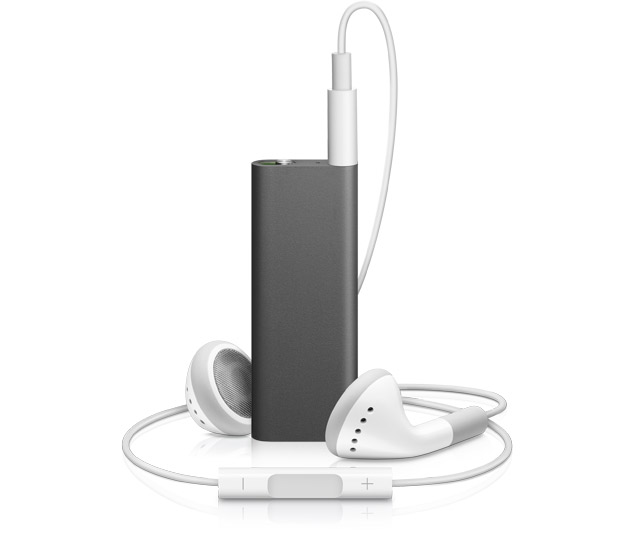

- 1st Generation
- 2nd Generation
- 3rd Generation

3rd Generation.
The third-generation iPod Shuffle was released on March 11, 2009 and was said by Apple to be "jaw-droppingly small" and "The first music player that talks to you".
with dimensions of 45.2 mm × 17.5 mm × 7.8 mm (1.8 in × 0.7 in × 0.3 in).
It was available with a silver or black brushed aluminum case similar to the second generation iPod Shuffle; this made it the first iPod Shuffle that was available in black.
It featured VoiceOver technology that allowed song names, artist names, album names and playlist contents and names to be spoken in 20 different languages using the Text-to-Speech incorporated in iTunes 8 and 9, which is based on Nuance Vocalizer.
Users of MacOS 10.5 and newer will hear Alex on their iPod shuffle, while MacOS 10.4 and Windows users will hear Samantha. It has also gained support for multiple playlists, in contrast to previous versions of the iPod Shuffle, which only allowed a single playlist.
According to the compatibility list published in Apple's website, none of the currently sold Apple headphones support the third-generation iPod shuffle.